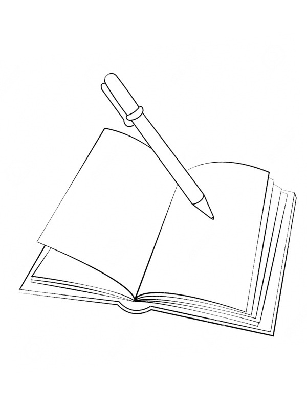

Wat is poëzie?
Poëzie; Het is een kunstvorm verweven met de ziel van taal, onthult onontdekte dimensies van menselijke expressie. Het is geen louter woordenspel, maar een spiegel van emoties, gedrenkt in de nuance van het onzegbare. In poëzie fluistert de taal van de ziel, dansen woorden op het ritme van verbeelding en betekenis. Het is een onzichtbare brug tussen het meetbare en het mystieke, waar elk vers een venster opent naar de diepten van menselijke ervaring.
Het is als een kunstvorm van taal, waar woorden worden geweven tot een uniek weefsel van emoties, beelden en ritme. Het is een expressieve manier om complexe gevoelens en gedachten over te brengen, vaak met een focus op esthetiek en verbeelding. Door metaforen en symboliek biedt poëzie een diepere, meer suggestieve benadering van communicatie, waardoor lezers worden uitgedaagd om hun eigen interpretaties te ontdekken. Het is een rijke vorm van menselijke expressie die de diversiteit van menselijke ervaringen en perspectieven omarmt.
Kenmerken van poëzie
Kenmerken van poëzie kunnen soms subtiel zijn, waardoor ze lastig te herkennen zijn. Hier zijn enkele kenmerken:
- Meerdere interpretaties: Poëtische teksten kunnen op verschillende manieren worden begrepen, waardoor ruimte ontstaat voor diverse opvattingen.
- Belang van elk woord: In poëzie is elk woord doordacht en draagt het bij aan de diepere betekenis van het geheel.
- Focus op associatie, klank en gevoel: Poëzie richt zich vaak op het oproepen van associaties, het spelen met klanken en het overbrengen van emotionele nuances.
- Significante voordracht: De manier waarop poëzie wordt voorgedragen, speelt een cruciale rol bij het overbrengen van de beoogde emoties en sfeer.
Voorbeelden
Hieronder zijn een paar voorbeelden te zien van bekende gedichten:

Hierboven is een gedicht te zien van de bekende Nederlandse dichter J.C. Bloem
Hier een gedicht van meer dan 600 jaar geleden, geschreven door Pieter Corneliszoon Hooft.